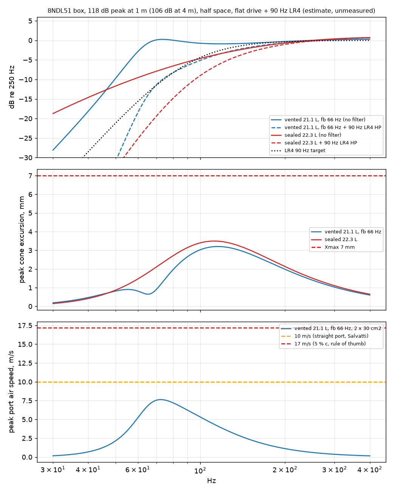
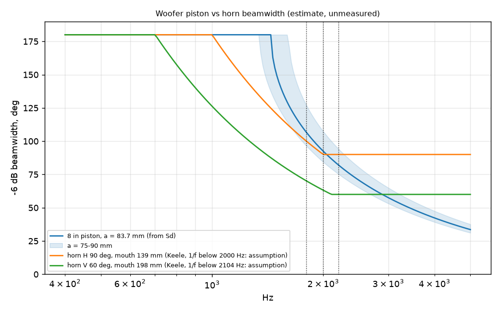
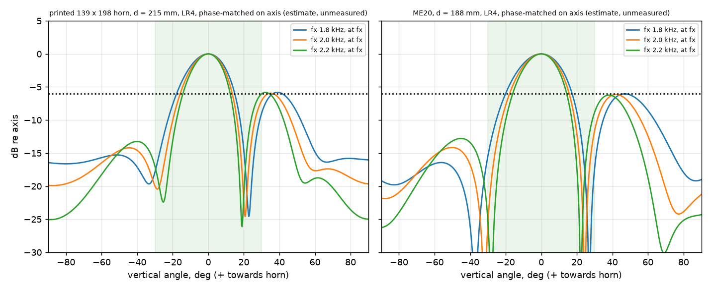

A compact two-way speaker in the class of the F81: an 8" cone and a 1" compression driver on a 3D-printed horn, cheap and easy to make, with excellent accuracy.
What it is. An own design in the same class as the F81 compact two-way (8" + 1" on a horn), not a copy of its geometry or branding. Several matched units (possibly 4–6) are planned for a multi-point listening system in a small bar or room, possibly ambisonic or quadraphonic, with subwoofer(s) below about 80–100 Hz.
Where it stands. Layout chosen (23 Nov 2026): an 8" woofer (8NDL51) and a 1" compression driver (DH450) on a printed 90° × 60° horn, rather than a coaxial 8". The first sizing pass gives a vented plywood box of 300 × 450 × 260 mm (21.1 L net, tuned to 66 Hz) with two printed slot ports, a 139 × 198 mm horn mouth, a 2.0 kHz crossover as a starting point and a mass of 11.05 kg, all inside the size and weight limits. The compression driver has ample margin at the target level; the woofer sets the box's limit. 25 independent checks agree with the stored results, and 139 planted errors were all caught.
What's next. Design the horn profile and simulate it (BEM), then model the box and horn in CAD with the driver fixings from the drawings.
| Type | Compact two-way: 8" cone + 1" compression driver on a printed 90° × 60° horn (layout chosen 23 Nov 2026) |
|---|---|
| Use | Multi-point listening system (possibly ambisonic or quadraphonic), listening bar, "deep listening" |
| Bandwidth | About 80–100 Hz to 18–20 kHz, subwoofer(s) below |
| Coverage (H × V) | About 90° × 60°, wide and even, overlapping neighbouring boxes; 60° vertical is a hard target for the horn. For reference, the F81 is specified at 90° × 70°, 95 Hz–19 kHz, 98 dB 1 W/1 m, 5.2 kg F81 user guide v1.2, w3; its successor F81.2 at 90° × 60°, 110 Hz–20 kHz, 7.4 kg, 353 × 250 × 228 mm F81.2 spec sheet, w3 |
| Maximum level | 100 dB instantaneous peaks at the listener (2–4 m), plus about 6 dB headroom: 106 dB peak at 4 m from one box headroom: assumption |
| Drivers | Woofer 8NDL51; HF DH450 (16 Ω) for the prototype |
| Crossover | Passive network in each box; a separate DSP processor does system EQ, delay and the sub crossover, one output per box. Starting point 2.0 kHz LR4 estimate (unmeasured); final only from in-box measurements |
| Maximum size (W × H × D) | ≤ about 300 × 450 × 300 mm |
| Maximum weight | ≤ about 12 kg |
| Mounting | Wall or ceiling brackets, angled down; the box needs fixing points |
| Room | Small bar or room, about 5–8 m across; listeners 2–4 m from each speaker |
| Finish | Custom colour or grille design; details to come |
| Manufacture | Plywood box (simple straight-cut woodwork) + 3D-printed horn and ports |
| Quantity | Possibly 4–6; all units must match closely |
| Measurement | Critical: the prototype is measured fully (about 1.5–2 h), each further unit spot-checked for matching (about 10 min) |
| 21 Nov 2026 | Project started as an own design in the F81 class, not a copy. An earlier lab two-way study of nearly the same speaker supplies the driver shortlist, horn sizing method and checks. |
|---|---|
| 21 Nov 2026 | Scoping: multi-point listening use; new drivers bought for the best result; ply box + printed horn; possibly 4–6 units; sub(s) below about 80–100 Hz; class critical; passive crossover in each box with DSP for system EQ, delay and sub crossover; wall or ceiling brackets; box ≤ about 12 kg and ≤ about 300 × 450 × 300 mm. Consequence derived: multi-point playback needs closely matched units and smooth off-axis response, so consistency and directivity matter more than maximum level. |
| 23 Nov 2026 | Layout: 8" + 1" compression driver on a printed 90° × 60° horn, not a coaxial 8". Why: stock 8" coaxials have round 90–100° patterns, so none gives 60° vertical; none offers a replaceable or printable waveguide; using the cone as the horn wall is a known mismatch Keele, w5 with cone-motion modulation Hinson, w3; the F81.2 is itself this layout. No coaxial hedge sample. |
| 23 Nov 2026 | "100 dB peaks" means instantaneous peaks at the listener. Narrowing of the vertical coverage to about ±15° around the crossover accepted, with brackets aimed so listeners sit inside it. Why: inherent to a separate woofer and horn at this spacing (see Results). |
| 23 Nov 2026 | Box shell 15 mm birch ply (not 18 mm). Why: 18 mm is at the 12 kg limit (12.06 kg at nominal density); 15 mm leaves 0.95 kg margin. Margins, not limits. |
| 23 Nov 2026 | Port tuning lowered from 70 to 66 Hz with the same two 30 cm² slots, now 150 mm long. Why: port air speed at 70 Hz was only 0.6 dB under the 10 m/s noise onset; at 66 Hz it is 2.3 dB under, at the cost of a few tenths of a dB at 90 Hz. |
Sizing pass 1, 23 Nov 2026. All figures estimate (unmeasured); arithmetic verified by 25 independent checks (1191 comparisons, 139 of 139 planted errors caught). Formula sources: Small/Thiele lumped model (textbook, w5); port rules Salvatti, Devantier & Button 2002, w4; horn mouth rule Keele 1975, w4; driver datasheets (w4).
| Box | Vented, 300 × 450 × 260 mm external (W × H × D), 15 mm birch ply, net 21.1 L, tuned to 66 Hz, F3 about 60 Hz (F6 55 Hz). Sealed was rejected: overdamped (Qtc 0.47, F3 125 Hz) and needs nearly twice the cone travel when equalised. |
|---|---|
| Ports | Two printed slots of 30 cm² each (about 30 × 100 mm), 150 mm long, beside the horn; peak air speed 7.6 m/s at the 4 m target in a half space (2.3 dB under 10 m/s). Pipe resonance about 880 Hz, in the woofer band: to be checked by measurement. Length to be trimmed by impedance sweep. |
| Woofer excursion | 3.2 mm peak at 115 Hz for 106 dB peak at 4 m (half space, 90 Hz LR4 high-pass), against Xmax 7 mm: 6.8 dB margin. Hung clear of any wall (free-field bound): 6.4 mm, 0.8 dB margin. |
| Woofer amplifier | 127–179 W into 8 Ω for 4 m (so a 200 W channel); 32–45 W for 2 m. |
| HF driver (DH450) | OK: 10.1 V peak (8.0–14.3 V) at the target; thermal margin 19 dB against the 20 W rating (7.9 dB worst case); peak-voltage margin 9.8 dB (6.8 dB worst case). The same at 1.8, 2.0 and 2.2 kHz. Passive pad about 13 dB (10–16.5 dB). Its sensitivity is quoted on a different (90° × 40°) horn, taken ±3 dB on ours assumption. |
| Horn mouth | Keele's rule gives 139 × 208 mm for 90° × 60° at 2.0 kHz; the baffle allows 204 mm of height above the woofer, so the mouth is 139 × 198 mm: 90° horizontal from 2.0 kHz, 60° vertical from 2.10 kHz. About 150 mm deep; a two-stage (slot-type) flare. Prints in one piece, no split. |
| Crossover | 2.0 kHz LR4 acoustic as the starting point: the 8" cone, as a piston, is 90° wide at 2042 Hz (1898–2278 Hz over the effective-radius range). Final only from in-box measurements. |
| Vertical lobing | Driver centres 215 mm apart (1.25 wavelengths at 2 kHz): first nulls at ±23.6°, −6 dB window about ±15° at the crossover. 60° vertical cannot be held through the crossover with a separate 8" and horn in this box; it would need under 172 mm spacing. The HF acoustic centre sits about 150 mm (105–200 mm) behind the woofer's assumption, so the passive network must be phase-matched from measurements. |
| Mass | 11.05 kg at nominal ply density (10.73–11.46 kg over 670–760 kg/m³) Riga plywood handbook, w4, margin 0.95 kg to 12 kg; about 2.8 kg of the total is assumed items (crossover, grille, fixings, wiring). |



Nothing printed or sliced yet. Planned parts:
| HF horn (planned) | Printer: not set (fits either lab printer: envelope about 158 × 163 × 222 mm). Material: PETG assumed for the mass estimate, brand not set. Nozzle, layer height, walls, top/bottom layers, infill % and pattern, supports, orientation, temperatures, speed/profile, brim, slicer and profile version: not set. Splits and joints: one piece, no split. Estimated time: not set. Estimated mass 0.63 kg estimate. |
|---|---|
| Port slots ×2 (planned) | Printer: not set. Material: PETG assumed, brand not set; 3 mm wall assumed. Nozzle, layer height, top/bottom layers, infill % and pattern, supports, orientation, temperatures, speed/profile, brim, slicer and profile version: not set. Splits and joints: not set. Estimated time: not set. Estimated mass 0.44 kg for the pair, including a 1.5× allowance for flares, flange and ribs estimate. |